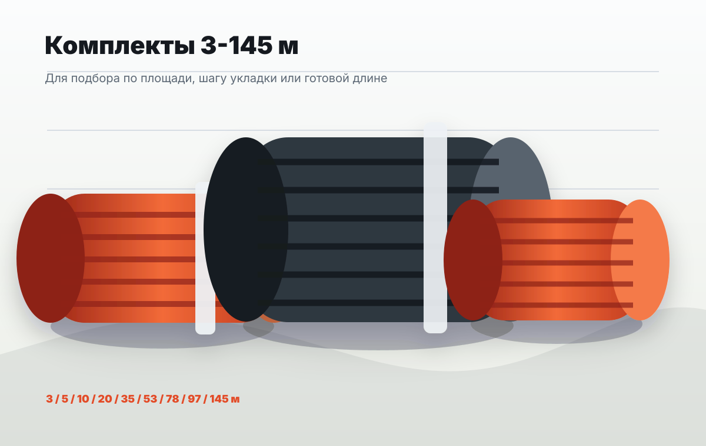

Линейная мощность
Для оценки нагрузки используйте 40 Вт на метр подобранной секции.
КДБС-40 / каталог
Комплекты по длинам, ориентир по цене, наличие и состав поставки. Для точного КП укажите город и нужное количество.

Как читать каталог
Все позиции КДБС-40 имеют линейную мощность 40 Вт/м. Для предварительной оценки нагрузки умножьте длину выбранной секции на 40 Вт, а для тока разделите суммарную мощность на 220 В.
Прайс
Цена, наличие и срок фиксируются в счете после подтверждения заявки.
| Позиция | Длина | Мощность | Питание | Шнур | Радиус | Комплект | Наличие | Цена |
|---|
Для оценки нагрузки используйте 40 Вт на метр подобранной секции.
Секции рассчитаны на подключение к обычной сети, без трансформатора для ПНСВ.
Презентация и паспорт КДБС доступны в отдельном разделе документов.
В каталожных позициях материал указан как морозостойкий для зимнего прогрева.
Этот параметр помогает предварительно оценить раскладку кабеля по зоне бетонирования.
Итоговые цена, срок и наличие фиксируются в коммерческом предложении и счете.